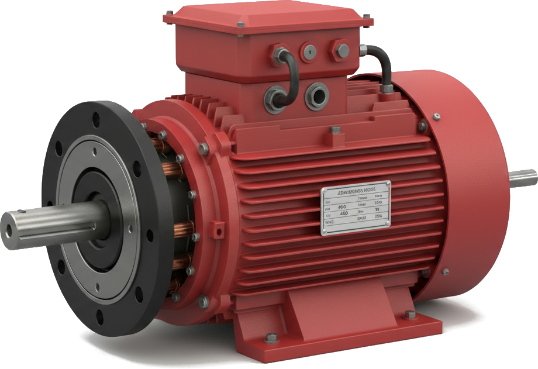
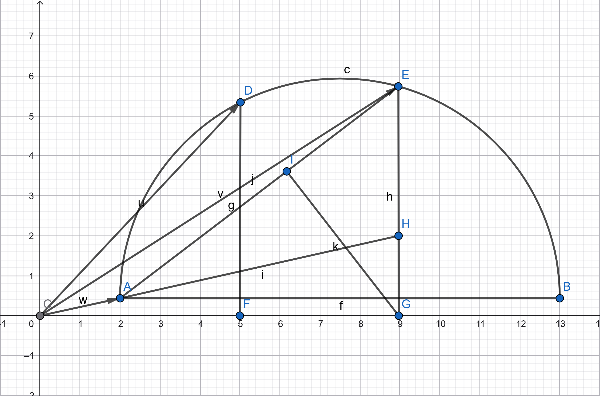

The definitive tool for plotting the circle diagram of asynchronous machines.
This platform enables accurate plotting of asynchronous machines.
It offers an intuitive interface for
performance analysis and visualization of key operational characteristics.

Engineering Support
Empowering electrical engineers with precise tools to analyze, visualize, and optimize asynchronous machine performance effectively.
Learn MoreLearn The Theory
Understand the fundamental principles behind the circle diagram and strengthen your knowledge through practical visualization.
Learn MoreSave Your Time
Automate the entire plotting process to reduce calculation effort, eliminate errors, and improve analysis efficiency.
Learn MoreCircle Diagram
Circle diagrams are a visual representation of the relationship between the speed and torque of an
asynchronous motor.
They provide valuable insights into machine efficiency, power factor, and performance
under varying load conditions.

Theoretical Foundations
The theory of the asynchronous machine is based on the principles of electromagnetic induction. Key equations describe the relationships between stator and rotor currents, torque, slip, and power flow. These formulas provide the foundation for analyzing machine performance and understanding operational characteristics under different load conditions.
See All Equations